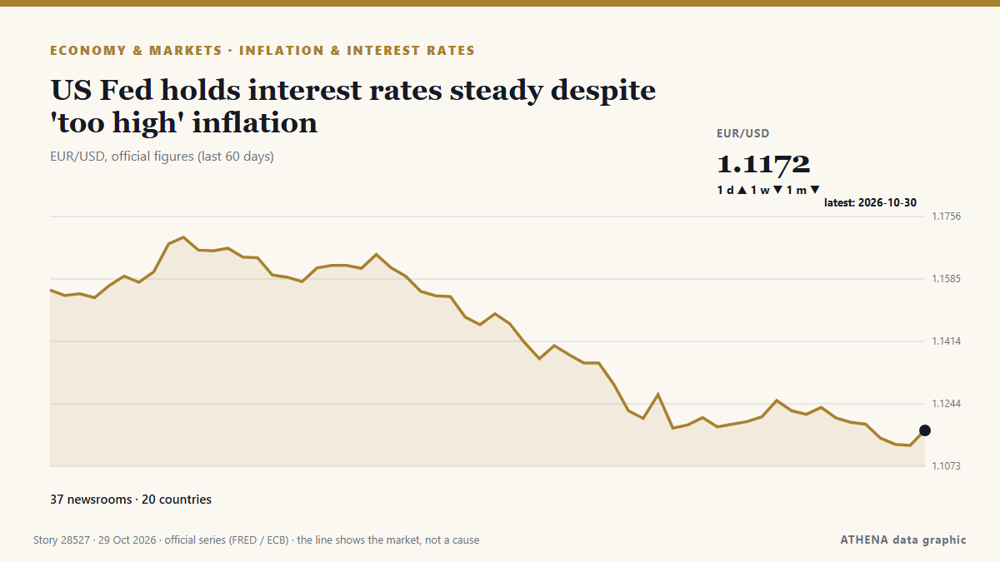

US Fed holds interest rates steady despite 'too high' inflation

The US Federal Reserve is expected to keep interest rates unchanged in its upcoming meeting next week. de Times of India
Relayé de façon indépendante par 37 médias dans 20 pays depuis le 25 oct. ; premier à l'annoncer : Times of India ; la couverture faiblit. ATHENA juge le risque modéré (2.5/10), surtout en raison de la gravité des dommages décrits et de sa portée géographique et sectorielle. La confiance est de 84 % (élevée) : 37 médias indépendants le confirment, avec une fiabilité moyenne des sources de 74 %.
Pourquoi c'est important: Les banques centrales fixent le prix de l'argent ; leurs décisions font bouger devises, obligations, crédits immobiliers et bourses dans le monde.
Ce qui a changé : 66 nouveaux articles de 30 rédactions dans les 24 heures jusqu'au 29 oct..
Premier titre : Fed holds rates steady despite concerns over inflation
Les titres sont affichés en anglais, tels que publiés.
En un coup d'œil
Sélectionné, noté et rédigé par la méthodologie publiée d'ATHENA. Aucun rédacteur n'intervient sur un événement en particulier. Comment il est produit ›
| 25 Oct 02:28 UTC | 1 |
|---|---|
| 25 Oct 08:28 UTC | 0 |
| 25 Oct 14:28 UTC | 0 |
| 25 Oct 20:28 UTC | 0 |
| 26 Oct 02:28 UTC | 0 |
| 26 Oct 08:28 UTC | 2 |
| 26 Oct 14:28 UTC | 0 |
| 26 Oct 20:28 UTC | 1 |
| 27 Oct 02:28 UTC | 0 |
| 27 Oct 08:28 UTC | 4 |
| 27 Oct 14:28 UTC | 2 |
| 27 Oct 20:28 UTC | 1 |
| 28 Oct 02:28 UTC | 2 |
| 28 Oct 08:28 UTC | 5 |
| 28 Oct 14:28 UTC | 32 |
| 28 Oct 20:28 UTC | 18 |
| 29 Oct 02:28 UTC | 11 |
| 29 Oct 08:28 UTC | 5 |
| 25 Oct 02:42 UTC | 1.1 |
|---|---|
| 28 Oct 16:48 UTC | 2.6 |
| 29 Oct 10:36 UTC | 2.5 |
Pourquoi ces chiffres
Importance
Risque
Confiance
La couverture : qui l'a annoncé, et quand
titre tel que publié · ouvre l'original- Times of India · Inde · IndiaUS Fed expected to hold rates as inflation, energy costs weigh ahead of midterms
- Anadolu Agency (English) · Turquie · TurkeyFed, ECB and BoJ to make rate decisions amid inflation risks
- Anadolu Agency (English) · Turquie · TurkeyFed expected to hold rates amid accelerating inflation ahead of November US midterms
- The Hill · États-Unis · United StatesFormer White House economic adviser on Fed rates: 'Tough position' for Warsh
- New York Times Business · États-Unis · United StatesThe Fed Is Expected to Hold Rates Steady. Warsh Will Have to Explain Why.
- New York Times Business · États-Unis · United StatesThe Fed Is Expected to Hold Rates Steady. Warsh Will Have to Explain Why.
- CNBC World · États-Unis · United StatesFed expected to hold rates steady, but Warsh may point way to more hikes
- CNBC World · États-Unis · United StatesU.S. Treasury yields are little changed as Federal Reserve's monetary policy meeting gets underway
- PBS NewsHour · États-Unis · United States5 things to watch for in this week's Federal Reserve meeting
- Gulf News · Émirats arabes unis · United Arab EmiratesUAE interest rates: No cut expected today as central banks seen holding steady
- The Business Times · Singapour · SingaporeGold holds above US$4,000 as traders look to US Fed rate decision
- Business Recorder · PakistanChina's yuan hovers near 4-year high ahead of Fed decision
- Fortune · États-Unis · United StatesDon Kohn’s infamous ‘death march’ hikes were referenced in Kevin Warsh’s Jackson Hole speech—now the Fed veteran is weighing the chairman’s path ahead
- Asharq Al-Awsat (English) · Arabie saoudite · Saudi ArabiaGold Slips on Oil-Fueled Inflation Fears Ahead of Fed Meeting
- SABC News · Afrique du Sud · South AfricaThe rand softens as oil prices rise, Fed in focus
- CNBC World · États-Unis · United StatesTreasury yields tick higher ahead of Federal Reserve interest rate decision
- The Hill · États-Unis · United StatesFed likely to hold rates steady ahead of midterms
- The Guardian · Royaume-Uni · United KingdomFed holds interest rates steady in last decision before midterms
- New York Times Business · États-Unis · United StatesTrump’s Revived Push to Fire a Fed Governor Looms Over Warsh.
- New York Times Business · États-Unis · United StatesHow the Fed’s Interest Rate Decision Affects Credit Cards, Loans and More
- New York Times Business · États-Unis · United StatesTrump’s Push to Fire Fed Governor Lisa Cook Looms Over Warsh
- CNA (Channel NewsAsia) · Singapour · SingaporeUS Fed holds interest rates steady despite surging inflation
- CNA (Channel NewsAsia) · Singapour · SingaporeUS Fed expected to hold rates steady ahead of key midterm elections
- interest.co.nz · Nouvelle-Zélande · New ZealandCurrencies trade in tight ranges
- The Korea Times · Corée du Sud · South KoreaFederal Reserve likely to skip rate hike despite elevated inflation
- The Korea Times · Corée du Sud · South KoreaUS stocks hold steady ahead of Fed rate decision
- Gulf News · Émirats arabes unis · United Arab EmiratesUS Federal Reserve leaves interest rates unchanged ahead of key midterm elections
- Yonhap (English) · Corée du Sud · South KoreaFed holds key interest rate steady after last month's quarter-point hike
- The National · Émirats arabes unis · United Arab EmiratesUS Fed holds interest rates steady as inflation runs hot
- NPR · États-Unis · United StatesFed holds interest rates steady even as inflation remains stubborn
- Gulf News · Émirats arabes unis · United Arab EmiratesUAE keeps key interest rate unchanged in October, mirroring US Fed move
- The Hill · États-Unis · United StatesFederal Reserve holds interest rates steady in face of persistent inflation
- CNBC World · États-Unis · United StatesFed holds rates steady despite concerns over inflation
- Anadolu Agency (English) · Turquie · TurkeyFed holds benchmark interest rate steady at 3.75%-4%
- The Hill · États-Unis · United StatesWatch live: Warsh speaks after Fed votes to keep interest rates steady
- Sydney Morning Herald · Australie · AustraliaASX rises after Fed keeps rates on hold; Star shares jump, retailers slump
- Business Recorder · PakistanFed holds rates steady as it awaits 'accumulation of more information'
- Fortune · États-Unis · United StatesFed holds rates steady days before the midterms, even as inflation runs hot
- The Rio Times · Brésil · BrazilFed Holds at 3.75% to 4%, Two Vote to Hike
- Türkiye Today · Turquie · TurkeyFed holds rates steady days before midterm elections